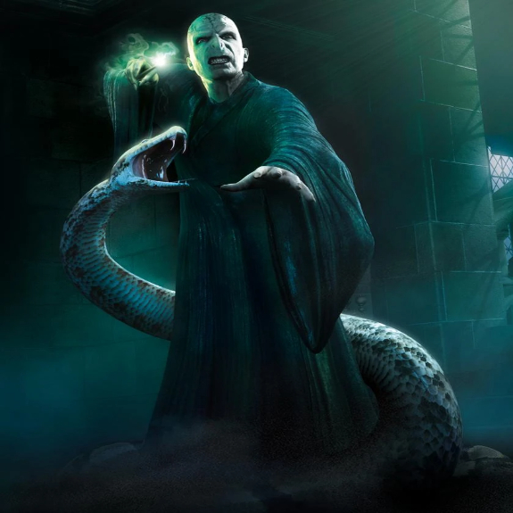

-
Tom Riddle's Diary

T. M. Riddle's Diary was a simple blank diary belonging to Tom Riddle, who also transformed it into a Horcrux in 1943, during Riddle's fifth year at Hogwarts School of Witchcraft and Wizardry. It was the first Horcrux he ever made and was used as a weapon.
ATK/ 2800 DEF/ 2500 -
Marvolo Gaunt's Ring

Marvolo Gaunt's Ring was an heirloom of the House of Gaunt, descendants of Salazar Slytherin and Cadmus Peverell. It was a gold ring inset with a black stone, engraved with what Marvolo Gaunt called the Peverell coat of arms, as it had come into the Gaunt line from an heiress of the Peverells, not the Slytherin family.
ATK/ 4200 DEF/ 3000 -
Salazar Slytherin's Locket

Slytherin's Locket was a piece of jewellery originally owned by Salazar Slytherin that became an heirloom of his family. It was a locket of heavy gold with a serpentine S in glittering green stone inlay on the front. After descending down from Slytherin, it came into the possession of the Gaunt family, and Marvolo Gaunt treasured this heirloom of this pure-blood heritage along with his ring heirloom.
ATK/ 4600 DEF/ 4300 -
Helga Hufflepuff's Cup

Hufflepuff's Cup was a magical item created by Helga Hufflepuff, one of the four founders of Hogwarts School of Witchcraft and Wizardry. It was a small golden cup with two finely-wrought handles with a badger engraved on the side. The badger is the symbol of Hufflepuff House. The cup also has the dubious distinction of being the only object known to have been stolen from a vault (specifically the vault of the Lestrange family) at Gringotts Wizarding Bank.
ATK/ 2500 DEF/ 2000 -
Rowena Ravenclaw's Diadem

Ravenclaw's Diadem (also known as the Lost Diadem of Ravenclaw) was the only known relic once belonging to Rowena Ravenclaw, the founder of Ravenclaw House at Hogwarts School of Witchcraft and Wizardry. Etched upon its surface was Ravenclaw's famous quote: "Wit beyond measure is man's greatest treasure."
ATK/ 2400 DEF/ 2600 -
Nagini
Nagini was a Maledictus cursed to transform into a snake. Originating possibly in Indonesia, by 1927 she was a performer at the Circus Arcanus where she met Credence Barebone (Aurelius Dumbledore) and had a romantic relationship with him. By then, she could transform into a snake at will, although her curse did often cause her to transform uncontrollably. By 1994, Nagini was seemingly trapped in snake form and belonged to Lord Voldemort, with whom she had a special bond largely due to becoming a Horcrux after her master had killed Bertha Jorkins that same year.
ATK/ 3000 DEF/ 2800 -
Harry James Potter

Harry James Potter (b. 31 July 1980) was an English half-blood wizard, and one of the most famous wizards of modern times. The only child and son of James and Lily Potter (née Evans), Harry's birth was overshadowed by a prophecy, naming either himself or Neville Longbottom as the one with the power to vanquish his arch-enemy, Lord Voldemort, one of the most powerful and feared Dark wizards in the world. After half of the prophecy was reported to Voldemort, courtesy of Severus Snape, Harry was chosen as the target due to his many similarities with the Dark Lord. This in turn caused the Potter family to go into hiding.
ATK/ 5000 DEF/ 4900